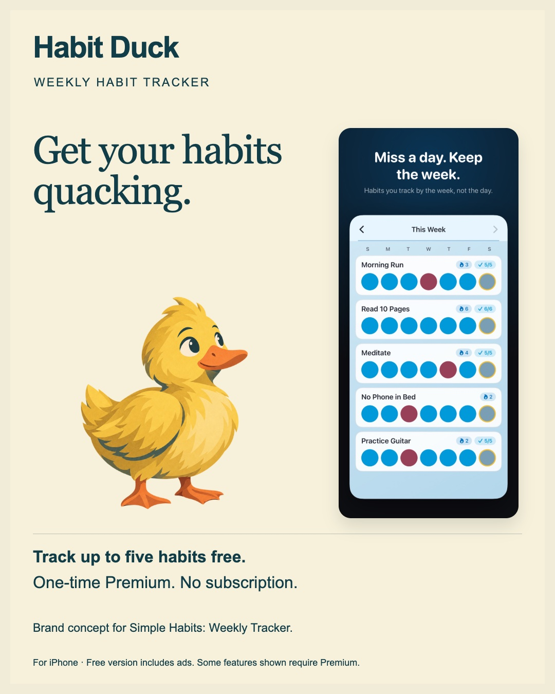
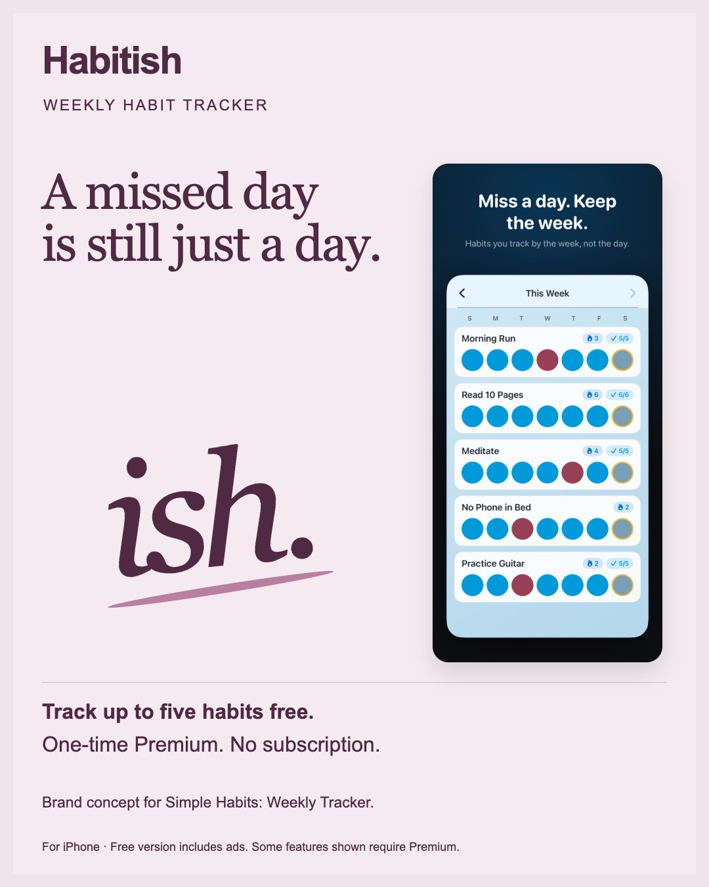
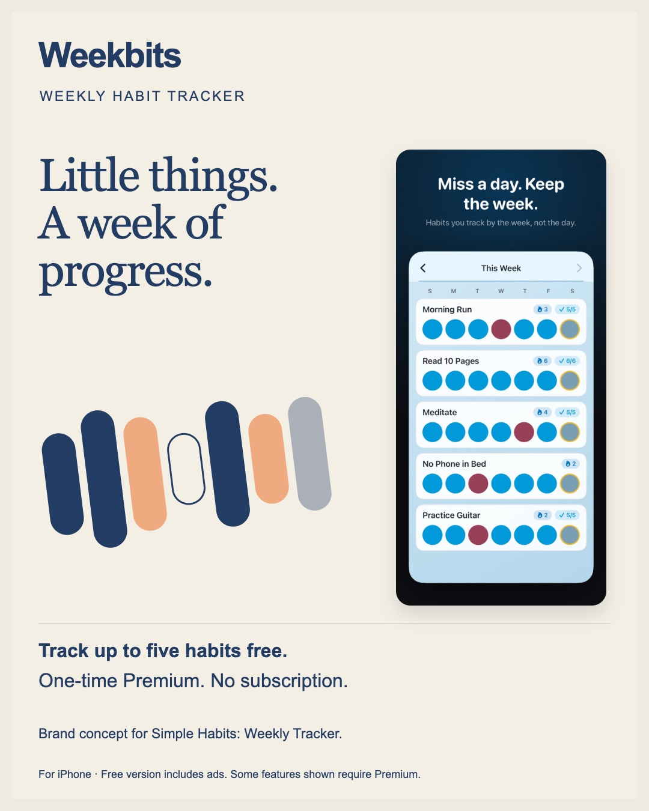
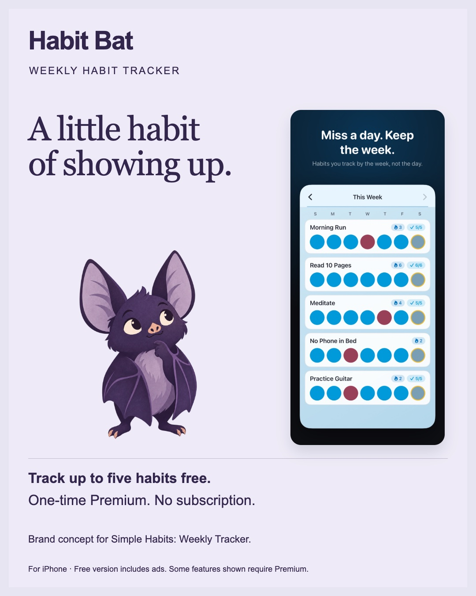
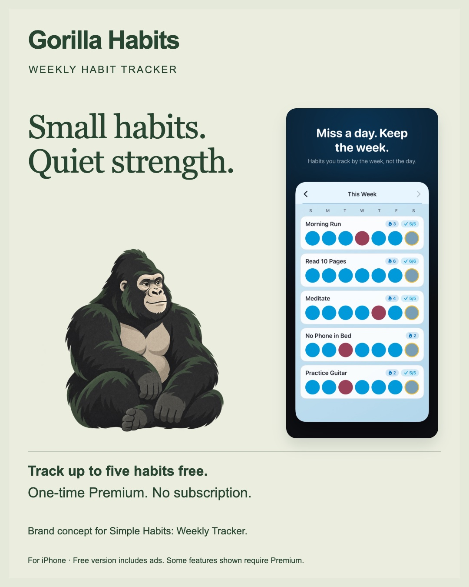
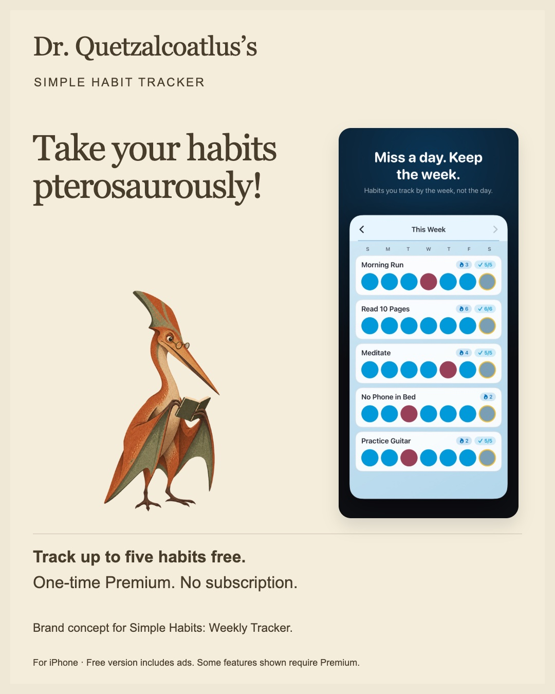

Making apps
Building and Rebranding Gorilla Habits
How a SwiftUI learning project became a simple habit tracker—and a six-concept branding experiment.
I wanted to practise SwiftUI. I also wanted a habit tracker.
I had tried a few, but hadn’t found one that did the basics the way I wanted: a clear overview, straightforward tracking, and an interface that didn’t make a small daily task feel like managing another project. Preferably without a subscription.
So I made one.
That was the original ambition. Build something useful, learn the framework, and have an app I wanted to use myself. It became Simple Habits.
Then I uploaded it to the App Store, because why not?
It looked fairly generic. It was a small app with a descriptive name, doing a familiar job. But it received some traffic. There were even sales. People I had never met were finding this thing I had built as an exercise and deciding it was worth paying for.
I kept working on it. Widgets were an opportunity to learn about widgets. Localisation let me explore what it takes to make an app work in more languages. I added iCloud sync. The app became more capable as I became more comfortable with the tools.
Eventually, it did what I wanted.
That creates an interesting problem when the main premise of your app is to be simple. There is always another feature you could add. Finding one is easy. Deciding whether it belongs takes more thought.
I largely left it alone and put my attention into Overdubber, my app for recording and layering audio. Simple Habits was functional. It didn’t need to become a larger project just to give me something to do.
But I kept thinking about its identity.
I remember hearing that the Canadian band Cancer Bats chose their name because it would be memorable. That idea stuck with me. A name could give you an image that stayed in your head.
Somewhere in that train of thought, I arrived at Habit Duck.
A duck seemed like a good place to start.
I went far enough to rebrand the app and prepare the App Store metadata. Habit Duck was never published under that name, but it was much more than a name on a shortlist.
Then I stopped.
I liked it. Was that enough reason to replace the identity of an app that already had users and occasionally made a sale?
I could at least try to learn something before committing. Building the app had been an exercise in learning development. This could be an exercise in learning how to market it.
We developed six concepts:












Original concept creatives, before the app rebrand. Select an image to view it full size.
My favourite unsuccessful candidate was Dr. Quetzalcoatlus. Whatever else you might say about it, it had personality.
These were developed identities, with imagery and messaging, rather than six names pasted onto the same advertisement. That made the comparison useful for choosing a direction, though it also meant the results could never tell us what the name alone contributed.
The experiment soon became more complicated than making six pictures and seeing which one people clicked.
An earlier advertising pilot included India and the Philippines. The India run was interrupted by an ad disapproval, and I abandoned that part. I still don’t have a satisfying explanation for it. A later Overdubber campaign in India ran without the same problem.
Then there was the question of whether the numbers were comparable.
The earlier Simple Habits campaign in the Philippines looked strong on click-through rate. But almost all its clicks—745 out of 750—came from Audience Network. The six-concept screen ran almost entirely in Facebook Feed.
Putting those headline percentages next to each other would have been easy. Calling the difference a verdict on the brands would have been misleading.
Even within the six-concept screen, delivery wasn’t equal. Some concepts received more impressions than others. A larger pile of clicks didn’t necessarily mean a stronger response.
The completed screen spent NOK 700, generating 229,153 impressions and 3,095 outbound clicks. The results were:
| Concept | Outbound click-through rate |
|---|---|
| Habit Bat | 1.436% |
| Gorilla Habits | 1.413% |
| Dr. Quetzalcoatlus | 1.353% |
| Habit Duck | 1.348% |
| Habitish | 1.292% |
| Weekbits | 1.256% |
Gorilla hadn’t felt like the obvious winner to me as the experiment unfolded.
And, on the primary click-through measure, it didn’t finish first. Habit Bat did, narrowly. Their cost per outbound click was effectively identical.
The fuller picture made Gorilla more interesting. Apple’s campaign reporting showed 93 product-page views for Gorilla, compared with 51 for Bat. Gorilla also led on reported store views relative to impressions and spend.
Those were product-page views, not purchases. We hadn’t established which identity would produce the most installs, active users, or paying customers. We also hadn’t proved that any of them would outperform Simple Habits.
But I had enough to make a decision. Gorilla had encouraging evidence behind it, and it was a direction I wanted to develop.
That still left the actual app.
An appealing advertisement creates an expectation. The app people open afterward has to feel like it belongs to the same product.
Gorilla Habits became a calmer forest-green, cream, and charcoal identity, with the promise: “Small habits. Quiet strength.” The work extended through the app, icon, widgets, onboarding, and store presentation.
There were revisions. Colours that seemed reasonable in isolation needed better contrast on a phone. We experimented with bananas, then removed them. Checkmarks and flames already communicated their jobs well.
Existing users’ habits, purchases, and chosen themes needed to survive the change. Giving the app a new identity wasn’t a reason to make people start over.
Throughout it, I wanted to preserve the reason I had built the app in the first place: a simple habit tracker that did the basics well. The free version supports up to five habits, with ads and an optional one-time Premium purchase. No subscription.
Now Gorilla Habits is live.
As I write this on 15 November 2026, it made a sale yesterday. There is also a five-star rating, although I don’t know when it was left, so I can’t attribute it to the rebrand.
That is a small, encouraging beginning. It is much too early to call the rebrand a commercial success.
Still, someone found the app and paid for it. After all the names, pictures, reporting problems, and revisions, that feels good.
I started this project because I wanted to learn SwiftUI and make a habit tracker I liked. Along the way, it gave me reasons to learn widgets, localisation, iCloud, branding, advertising, and how carefully you have to read a seemingly simple set of numbers.
The app still has a small job to do.
I’d like to keep it that way.